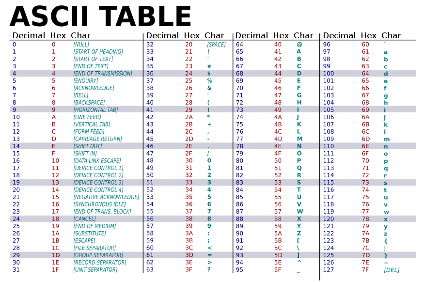

0.3 - מושגי בסיס - הרצאה
איך המחשב שומר מידע?¶
-
לפני שנצלול לרשתות מחשבים ואיך מחשבים מעבירים מידע אחד לשני, נדבר על איך המחשב שומר מידע.
-
כל המידע במחשב נשמר בסופו של דבר כמות של ביטים. כל ביט הוא יחידת המידע הקטנה ביותר, והוא יכול להיות אחד מתוך שני ערכים אפשריים: 0 או 1.
-
בית הוא רצף של 8 ביטים. כל ביט יכול להיות 0 או 1, ולכן כל בית יכול להיות אחד מתוך 256 ערכים שונים (2 בחזקת 8).
-
כאשר אנחנו רוצים לשמור מידע יותר מורכב, כמו מספרים, אותיות או תמונות, המחשב משתמש בתים (כמה ביטים) כדי לייצג זאת.
- מספר דצימלי הוא מערכת ספירה שבה יש 10 ספרות: 0, 1, 2, 3, 4, 5, 6, 7, 8, 9. זו המערכת שאנחנו משתמשים בה ביום-יום.
- מספר בינארי הוא מערכת ספירה שמבוססת על שני ספרות בלבד: 0 ו-1. כל ספרה במערכת זו נקראת ביט. המספרים הבינאריים נבנים על ידי הצגת כל מספר כצירוף של ביטים.
- לדוגמה, אם נרצה לשמור את המספר הדצימלי 123 במחשב נצטרך למצוא דרך להמיר בין מספרים דצמלים למספרים בינאריים. למזלנו, פיתחו שיטה שעושה זאת, והמחשב משתמש בה כדי לשמור מספרים.
-
המספר הדצימלי 123 יהיה מיוצג בבינארי כ:
1111011. כל ביט במערכת הבינארית מייצג חלק מהמספר, וההמרה מתבצעת לפי חישוב מערכתי:
1 × 2⁶ + 1 × 2⁵ + 1 × 2⁴ + 1 × 2³ + 0 × 2² + 1 × 2¹ + 1 × 2⁰ = 123. -
אם נרצה לשמור את אותיות כמו האות "A", המחשב לא שומר אותה ישירות כ-"A", אלא מתרגם אותה לייצוג בינארי בעזרת טבלת קידוד כמו ASCII או UTF-8.
- טבלת קידוד היא טבלה שמכילה קשר בין האות או הסימן שאותו רוצים לייצג למספר כלשהו. וכך אפשר לשמור במחשב סימנים ואותיות למשל על גבי מספרים בינאריים.
- למשל ב-ASCII, האות "A" מיוצגת על ידי הבית הבינארי
01000001. אם המחשב רוצה לשמור את האות, הוא ייצג אותה בעזרת 8 ביטים. - שיטות קידוד נוספות כמו UTF-8 מאפשרות לתמוך במגוון רחב של סימנים, כולל אותיות בעברית, סינית, ותווים מיוחדים.
- ככה המחשב שומר את כל המידע: כל אות, מספר, תמונה או קובץ מקודדים לביטים, והם מאוחסנים בזיכרון המחשב.
בקצרה, ביט הוא היחידה הבסיסית ביותר של מידע (0 או 1), ובית הוא קבוצה של 8 ביטים שנועדה לייצג ערכים שונים.
הקדמה - בתים בפייתון¶
יצוג¶
- דיברנו על כך שכל המידע במחשבים נשמר בסוף בביטים - (0 ו-1-ים), ועל כך אם אנחנו רוצים לשמור מספרים, מחרוזות וקבצים במחשב אנחנו צריכים למצוא דרך לתרגם בין ביטים למידע שאנחנו רוצים לשמור.
- קיימים חישובים מתמטים כדי לתרגם בין ביטים, למספרים ואני לא רוצה להיכנס לאיך הם עובדים, כי אני חושב שהם פחות רלוונטים - בפייתון אפשר באמצעות הפונקציה bin לתרגם בין מספר דצימלי (מספר עם 10 ספרות) למספר בינארי (מספר שמורכב מ0 ו-1, כמו בביטים) כך:

- הפונקציה int יודעת לתרגם מחרוזת של מספר בינארי למספר דצימלי כך:

הקס - hex¶
- הקס זה דרך לייצג ספרות שמיצגות 16 ערכים שונים: הנה הספרות השנות בהקס: 0123456789ABCDEF,
כמו שמספרים דצימלים הן מספר בין 0-9 (10 ערכים שונים), מספרים בינארים הם מספרים בין 0-1 (2 ערכים שונים) אז מספרים הקסדצימלים הם מספרים בין0-9 ובין A-F , כך שהם עם 16 ערכים שונים. - משתמשים בדרך כלל בהקס כדי לייצג בית - דרוש שני ספרות הקס כדי לייצג בית, בגלל ש 2 בחזקת 8 (בית אחד בבינארית) שווה ל16 בחזקת 2 (בית אחד בהקסדצימלית). אבל החישוב המתמטי הזה לא חשוב, הדבר החשוב אתם צריכים לזכור הוא שבאמצעות הקס, אפשר עם שני ספרות בלבד לסמל את כל הערכים של בית (מספר בין 0 ל-256.)
הפונקציה hex יודעת להמיר בין מספר דצימלי למספר hex:

הפונקציה int יודעת להמיר בין מספר הקס למספר דצימלי כך:

שימו לב שנהוג לייצג מספרי הקס עם 0x בהתחלה.
קידוד מחרוזות¶
- כדי לתרגם מחרוזת לביטים זה קצת יותר קשה, ותהליך הזה נקרא קידוד.
- לרוב הדרך שבה אנחנו מקדדים מחרוזות לבתים זה באמצעות ASCII
- שיטת ASCII היא שיטה שמציינת שלכל סימן, מספר ואות באנגלית יש ערך בבתים על פי טבלה מוגדרת. הטבלה זו שממירה בין הערכים לסימנים נקראת טבלת ASCII

- בטבלה זו, אפשר לראות שהdecimal מכיל את מספר, וchar מכיל את הסימן שאותו המספר מייצג.
- הטבלה מכילה רק 127 ערכים שונים, אז אפשר לייצג כל סימן בascii באמצעות בית אחד.
- בascii קיים גם ערך מיוחד לירידת שורה (/n), לטאב (/t), ואפילו סיום מחרוזת (/0)
- אז מחרוזת של 10 אותיות באנגלית, יכולה להיות מומרת ל11 בתים - 10 בתים בשביל האותיות, ועוד בית אחד לסיום המחרוזת (/0).
- כמו שיטת ASCII יש עוד המון שיטות לקידוד, כמו למשל שיטת UTF-16 מאפשרת לקודד עוד המון סימנים, כמו אותיות בעברית, ביוונית ויפנית ו2 בתים לכל אות.
בפייתון הפונקציה chr מקבלת מספר ומחזירה את האות שלו בascii:

בפייתון הפונקציה ord מקבלת אות, ומחזירה את היצוג שלה בascii:

התעסקות עם בתים בפייתון¶
- בפייתון כדי ליצור בתים, אנחנו צריכים ליצור מחרוזת שההתחלה שלה עם האות b.
- עכשיו אם במחרזות בתים שלנו אנחנו נכתוב סימנים, הם יתורגמו לבתים עם ascii
- לעומת זאת בגלל שאפשר לייצג בתים גם עם hex אנחנו יכולים גם לכתוב:
- כאשר אחרי כל
x\אנחנו כותבים 2 ספרות הקס שמייצגות בית. - אם נרצה להפוך את האובייקט בתים שיצרנו למחרוזת אנחנו יכולים להשתמש בפונקציה .decode:

- וזה יחזיר לנו מחרוזת של "hello world"
- בנוסף אנחנו יכולים להפוך מחרוזת לבתים עם ASCII באמצעות הפונקציה encode: